Maipú · serviteca de barrio
¿Todavía aguantan?
Luarca Hermanos: 4,6 con 118 reseñas. Cinco señales para saberlo sin adivinar.
- 118reseñas en Google
- 4,6de promedio
- 5señales para revisar los neumáticos
- 0páginas suyas: su web es un perfil de Facebook
Antes de que sea tarde
¿Cuándo se cambian?
01
El testigo de desgaste
Dentro del surco hay un resalte. Si la goma quedó a su altura, se cambia.
02
La edad
En el flanco hay cuatro números: semana y año. Con los años la goma se pone dura.
03
Grietas en el flanco
Rajaduras finas alrededor, aunque el dibujo se vea bueno.
04
Desgaste de un solo lado
Si un borde está más gastado, no es el neumático: es la alineación.
05
Vibración en el volante
Aparece a cierta velocidad y no se va: hay que verla en el taller.
Qué decir para cotizar
- La medida del flanco, tal cual: 195/65 R15.
- Cuántos neumáticos son.
- Si además quieres alineación y balanceo.
Con eso te dan el valor por teléfono, sin ir.
Las señales son generales y no reemplazan la revisión: cada cuánto rotar y cuándo cambiar lo dice la serviteca.
La goma avisa. Hay que saber mirar.
Qué hacen
Lo del día a día del auto
-
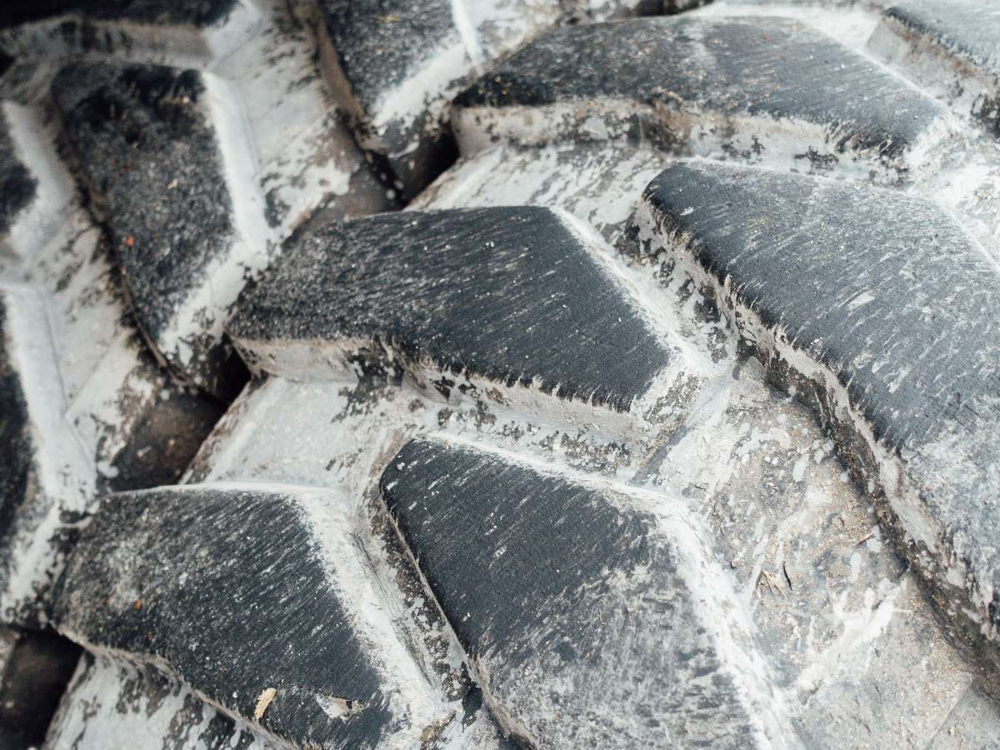
Neumáticos
Cambio y montaje
Con la medida que lleva tu auto.
-
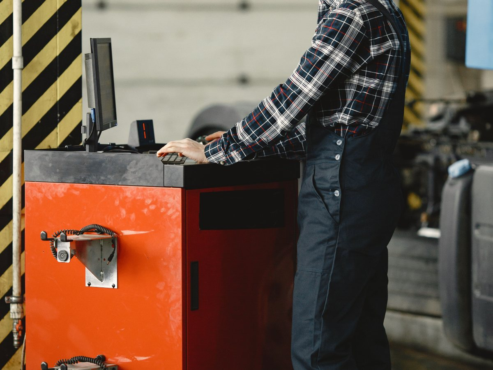
Alineación
Y balanceo
Lo dicen en su propia ficha.
-
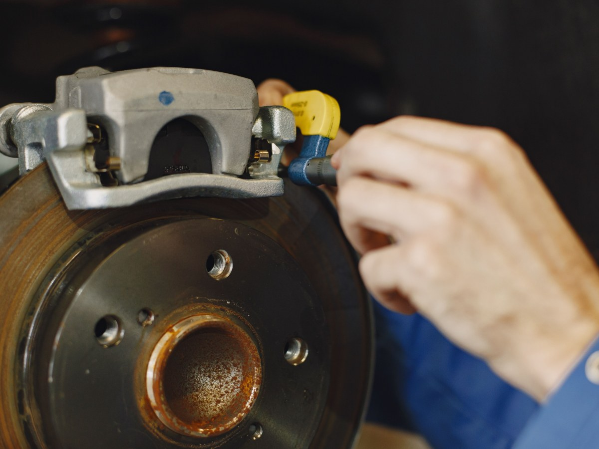
Frenos
Pastillas
Cambio de pastillas, dice su Facebook.
-
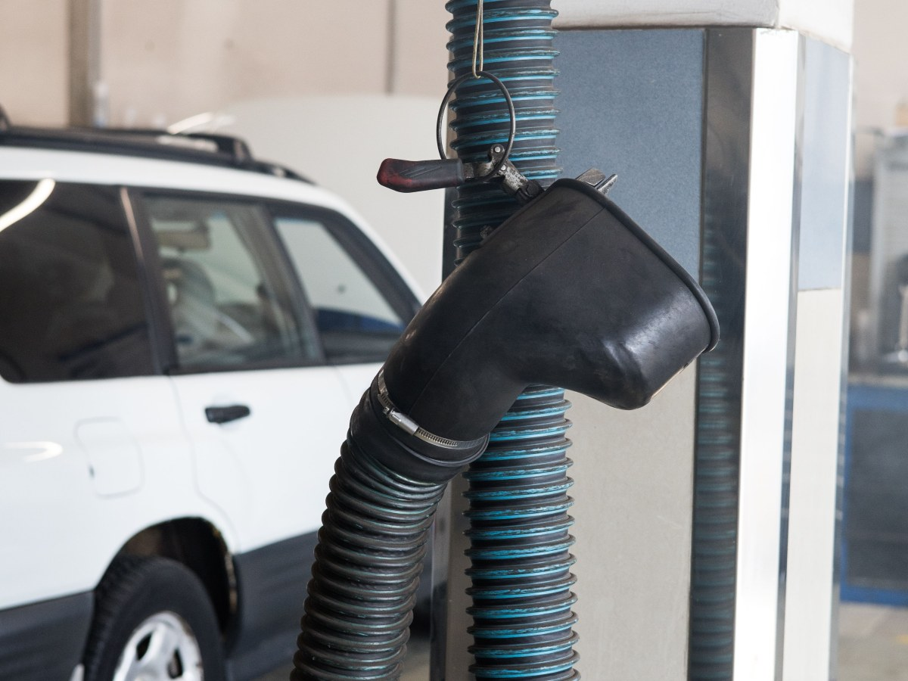
Lubricantes
Cambio de aceite
Con el filtro que corresponda.
-
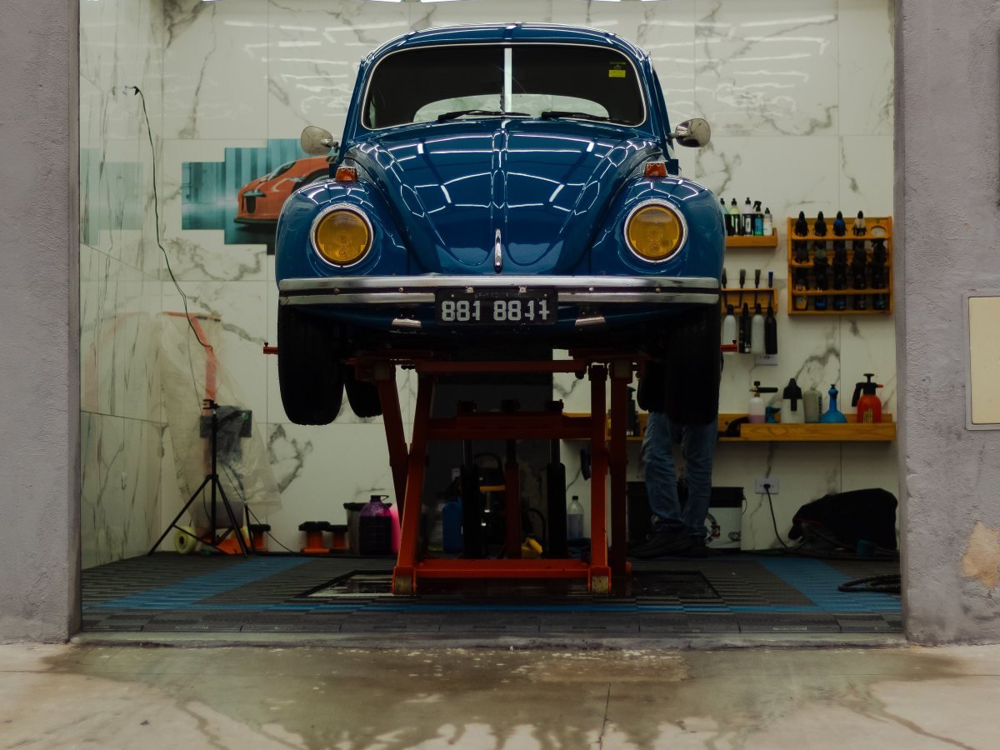
Revisión
Auto arriba
Se mira antes de salir de viaje.
-
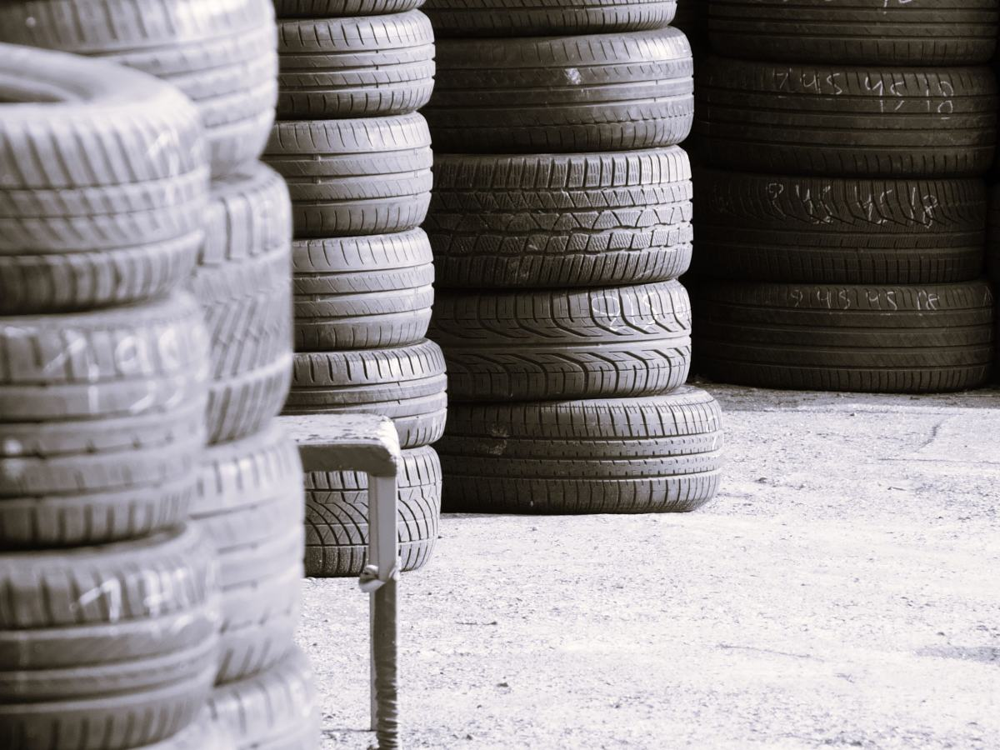
Rotación
Para que gasten parejo
Se cambian de posición cada cierto tiempo.
Neumáticos, alineación, frenos y lubricantes salen de su Facebook; el resto es una propuesta de secciones. No hay precios ni marcas.
Ciento dieciocho reseñas, y para cotizar hay que escribir por Facebook y esperar.
Google y su perfil, al 16-09-2026
El taller
Goma, fierro y aire
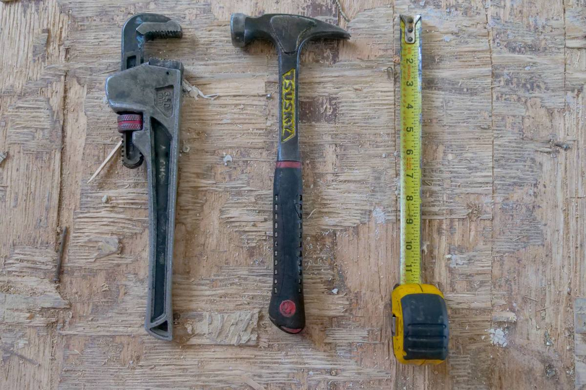
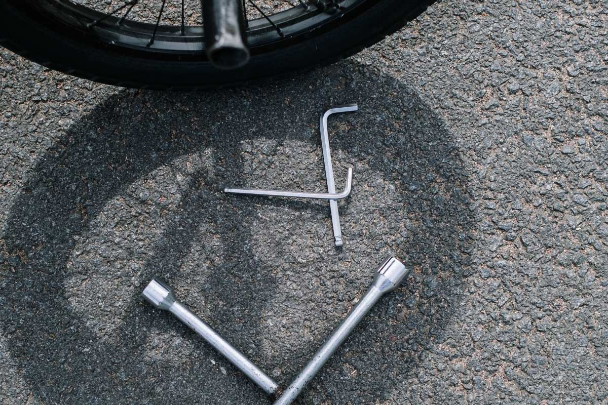
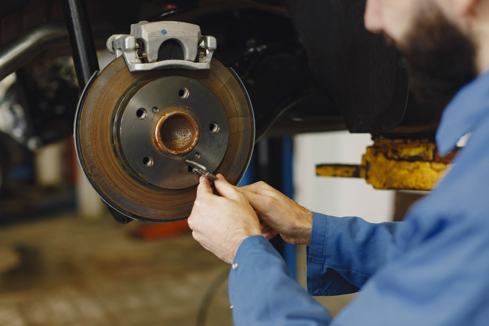
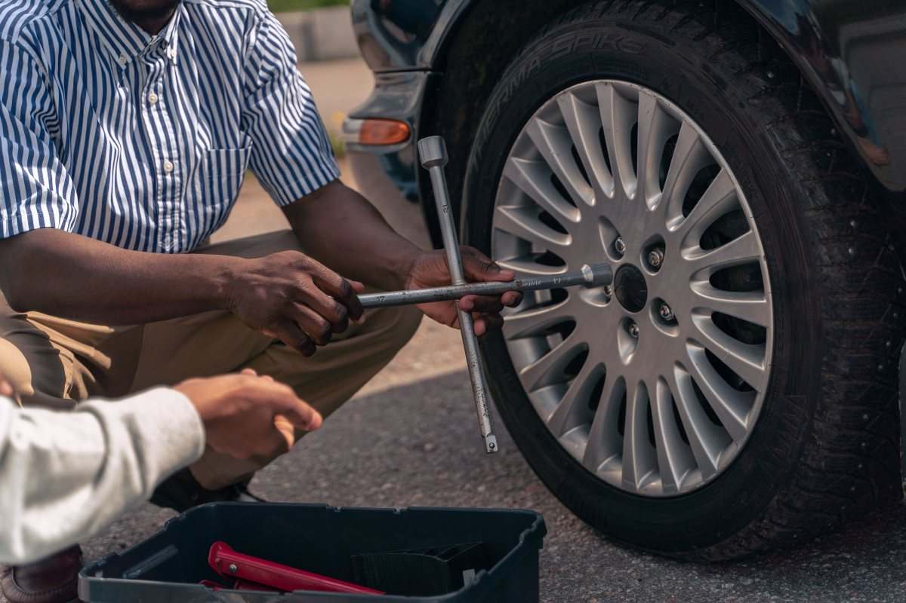
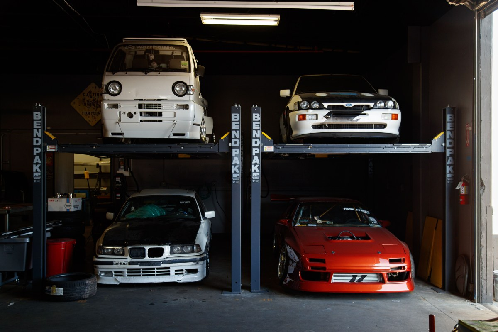
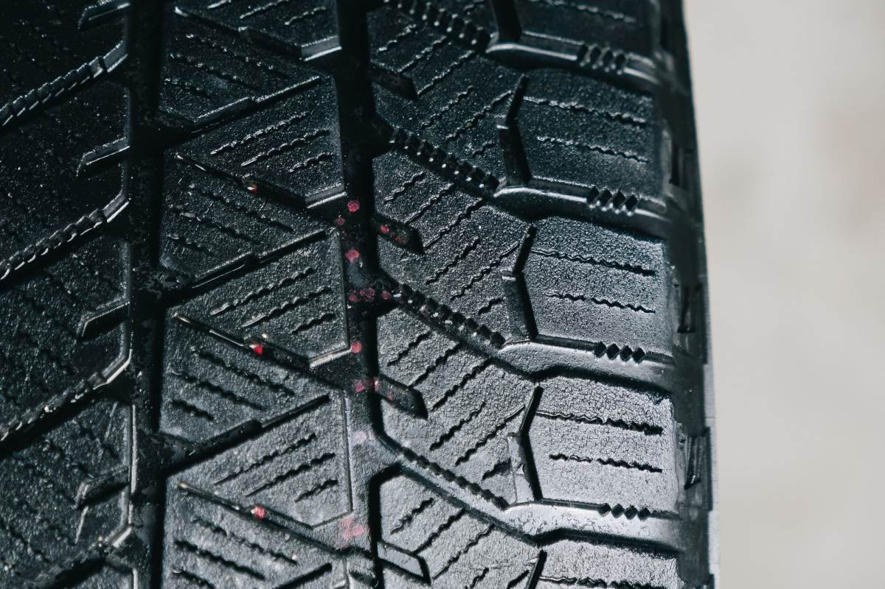
Fotos de referencia: ninguna es del taller.
Contacto
Se cotiza por teléfono
- Teléfono
- (2) 2316 7192
- Correo
- luarcahno.serviciointegral@gmail.com
- Comuna
- Maipú
La dirección exacta y el horario no están publicados en ninguna parte: son las dos cosas que más se buscan antes de ir.
Para Luarca Hermanos
Qué es real y qué falta
Lo verificado
El teléfono, el correo, los servicios de su Facebook y el 4,6 con 118 reseñas, al 16-09-2026.
Lo de ejemplo
Las secciones del taller y todas las fotos. Los «15 años» no se escribieron: no se pudieron verificar.
Lo que falta
La dirección, el horario y una página donde cotizar. Hoy todo eso pasa por un perfil de Facebook.